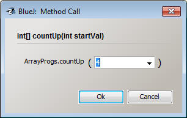
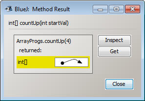
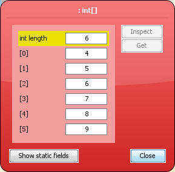
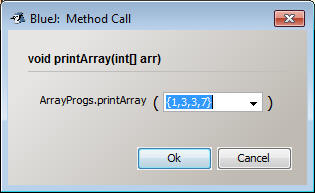

Array Programs:
For the ArrayPrograms, start by copying the following
blank class into your project
import java.util.*;
public class ArrayProgs
{
//sample method
public static int[] countUp(int startVal)
{
int[] arr = new int[6];
int counter = startVal;
for( int i =0; i< arr.length; i++)
{
arr[i] = counter;
counter++;
}
return arr;
}
public static int[] evenArr(int size)
{
return null; //dummy statement
}
public static int[] squareArr(int size)
{
return null; //dummy statement
}
public static int[] increasingArray(int firstVal, int lastVal)
{
return null; //dummy statement
}
public static int[] fibArr(int size)
{
return null; //dummy statement
}
public static void printArray(int[] arr)
{
}
public static void main()
{
}
}
These programs are a little different than
what you're used to. There will be
no interacting with the user with Scanner or printlns until the last two methods. Instead, all the
important information will be passed in as parameters, and the results will be
returned. Each method should create a new array, and then use a loop to fill the
array with the correct values. Once the array is ready, return it.
For example consider the following method which takes
in a number as a parameter and fills a size 6 array with the ints starting with
that value and counting up one each time.
public static int[] countUp(int startVal)
{
int[] arr = new int[6]; //create an array to return
int counter = startVal; //counter represents the value to add
for( int i =0; i< arr.length; i++) //i represents the index to fill
{
arr[i] = counter;
counter++;
}
return arr;
}
How to test the method:
Since there are no printlns until the end, test each method by right clicking
and running the specific method. When the window pops up, enter what you
would like the value of the parameter to be. In this case it's 4:

When you click ok, it should return to you something like this:

Click the inspect button so that you can see all the elements of the array:

Look through the elements to make sure they're all proper. In this case
I'm looking to see if the length is 6, the first value is 4, and all the
elements increase by 1 each time.
Methods:
public static int[] evenArr(int size)
This method will generate and return an int[] filled
with the even numbers, starting with 2. The size of the array will be passed in
as the parameter of the method.
For example: evenArr( 5) returns the array
{2,4,6,8,10}
public static int[] squareArr(int size)
This method will generate an return an int[] filled
with a list of square numbers, starting with 1. The size of the array will be
passed in as the parameter of the method.
For example: squareArr(6) returns the array
{1,4,9,16,25,36}
public static int[] increasingArray(int firstVal, int
lastVal)
This method will generate and return an array filled
with increasing values. The first and last values of the array are passed in as
parameters.
For example: increasingArray(4,9) would return the
array {4,5,6,7,8,9}
public static int[] fibArr(int size)
This method will generate and return an array that
contains numbers from the Fibonacci Sequence. The size of the array is passed in
as the parameter. The rules of the Fibonacci Sequence are that the first two
elements are 1 and 1. Every sequential element is determined by adding the
previous two elements. 1,1,2,3,5,8,13,21… You may directly put the first two
elements into the array, but a loop should be used to fill out the rest.
public static void printArray(int[] arr)
This method takes in an already filled int array and
prints out all of the elements, surrounded by curly braces and separated by
commas ( {1,3,7,6,8} ).
Hint: This is a little different than the previous methods. You do
not create a new array. This time you're given an array to work with.
Start by looping through each index and printing out arr[i]. Hopefully
this will print out all the values your entered. From there it's a matter
of adding commas between them.
To test this method, instead of putting an int in when you call the method, you
need to pass an entire array, including curly braces.
For example:

This should cause the same array to be printed on the terminal window.
public static void main()
This method is the only method that will use a
Scanner. It will one-by-one prompt the user for an input, and then use that
input to get an array from the right method. After that method returns an array,
use the printArray method to print it out.
For example: if the countUp method were a part of it
(don’t include it in your code)
Scanner scan = new Scanner(System.in);
System.out.println(“Please enter a value to count up to”);
String strVal = scan.nextLine(); //get the input from the user
int val = Integer.parseInt(strVal); //parse it into an int
int[] tmp = countUp(val); //use that input to get an array from the method
printArray(tmp); //pass that array into the printArray method to be printed.
This method will be used to turn in the program, so go
in this order:
evenArr
squareArr
increasingArray (this time get 2 ints from the user)
fibArr
One possibile output for running this method would look like
the following:
Please enter a size for the even array:
6
{2,4,6,8,10,12}
Please enter a size for the square array:
4
{1,4,9,16}
Please enter a starting value for the increasing array:
10
Please enter an ending value for the increasing array:
15
{10,11,12,13,14,15}
Please enter a size for the Fibonacci array:
10
{1,1,2,3,5,8,13,21,34,55}